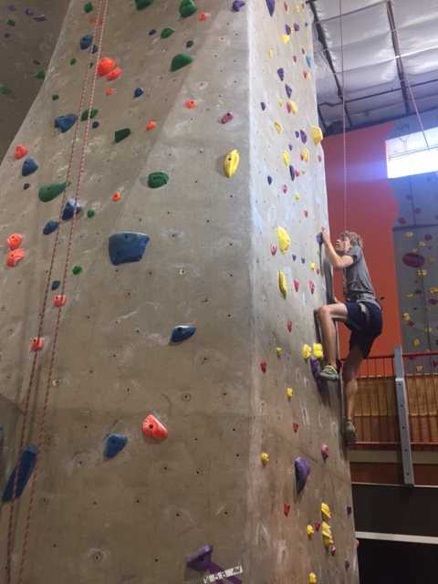
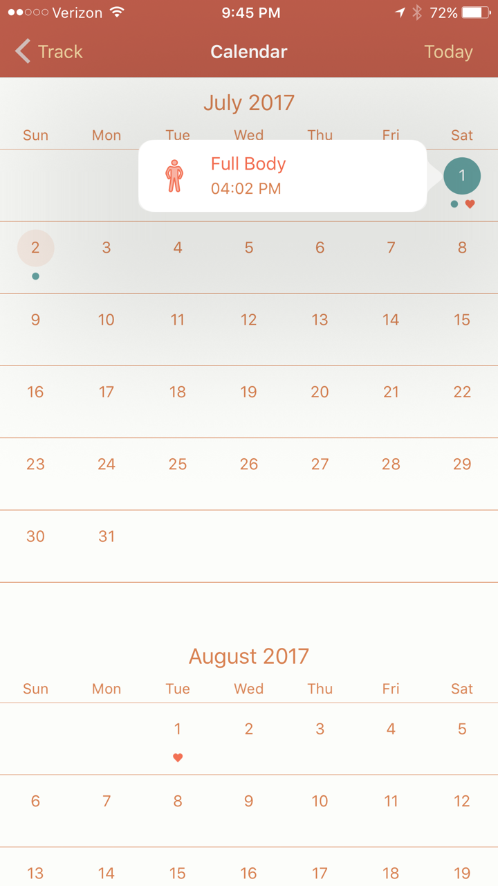
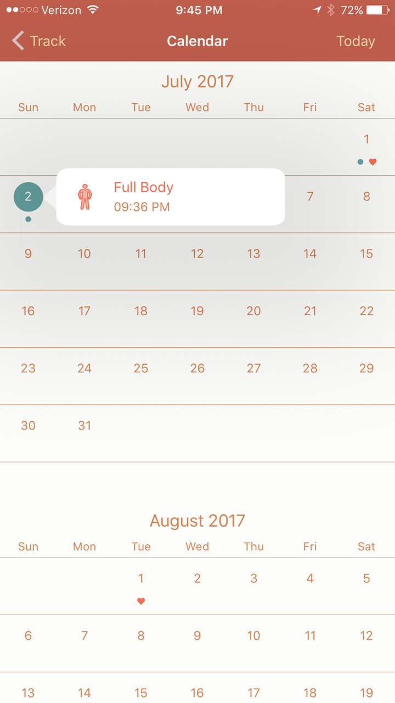
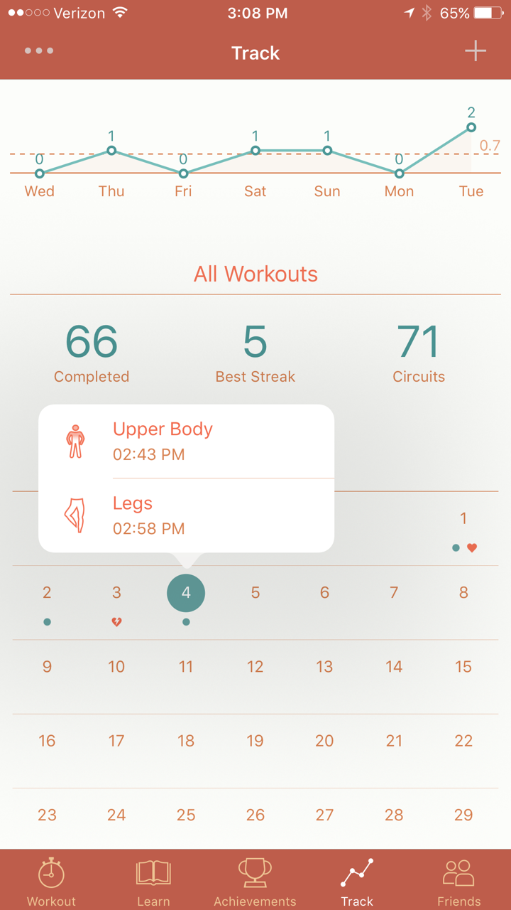
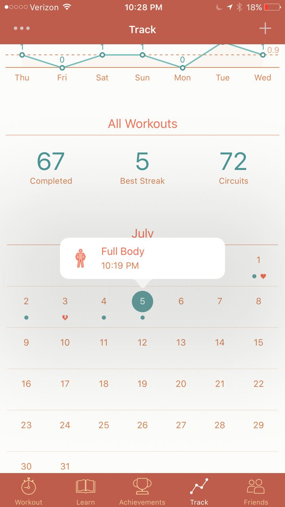
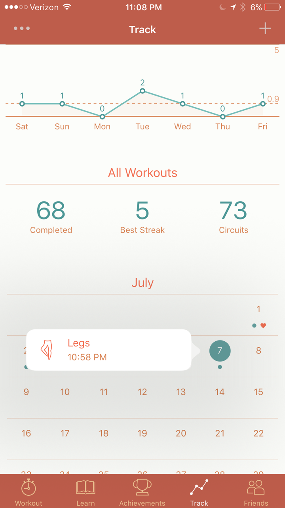
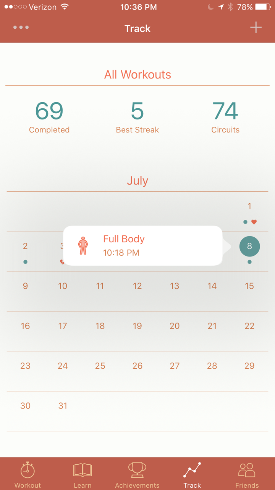

I completed several physical activites over the course of the week which took a total of 820 minutes.
I hiked strenuously for 180 minutes at East Rock Park in New Haven and nearby.
Refines activity-specific movement skills in one or more lifetime activities (outdoor pursuits, individual-performance activities, aquatics, net/wall games or target games).
Chooses an appropriate level of challenge to experience success and desire to participate in a self-selected physical activity.
Me on the edge of a cliff:
I climbed indoors at Rock Climb Fairfield for 160 minutes.
Refines activity-specific movement skills in one or more lifetime activities (outdoor pursuits, individual-performance activities, aquatics, net/wall games or target games).
Chooses an appropriate level of challenge to experience success and desire to participate in a self-selected physical activity.
Me climbing:
I completed seven so-called seven-minute workouts. In this case, “seven-minute workout” was something of a misnomer, as the workouts generally lasted a bit over eight minutes: as such, this amounted to a total of 60 minutes. Seven-minute workouts are an activity which I can practice throughout my life for the purpose of improving my health, choosing an appropriate level of difficulty.
Refines activity-specific movement skills in one or more lifetime activities (outdoor pursuits, individual-performance activities, aquatics, net/wall games or target games).
Demonstrates competency in two or more specialized skills in health-related fitness activities.
Chooses an appropriate level of challenge to experience success and desire to participate in a self-selected physical activity.
Images of the app:
     I learned soccer from my wonderful brother in two sessions totalling 90 minutes, particularly practicing dribbling and passing skills.
Demonstrates competency in two or more specialized skills in health-related fitness activities.
A before-and-after comparison of my passing and dribbling skills:
I ran once for 30 minutes, using an elliptical and a heart rate monitor to monitor my pace and heart rate and thereby improve the quality of my exercise.
Analyzes and applies technology and social media as tools for supporting a healthy active lifestyle.
Adjusts pacing to keep heart rate in the target zone using available technology (e.g. pedometer - heart rate monitor) to self-monitor aerobic intensity.
A time-lapse video of me running for thirty minutes (note the heart-rate measuring):
I created a website for evidence, which took about five hours, or 300 minutes, in total.
You are looking at it.